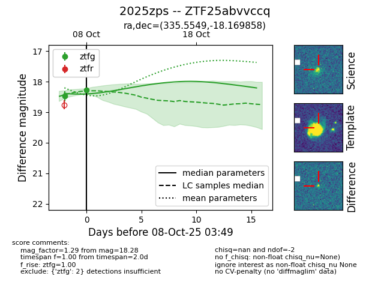
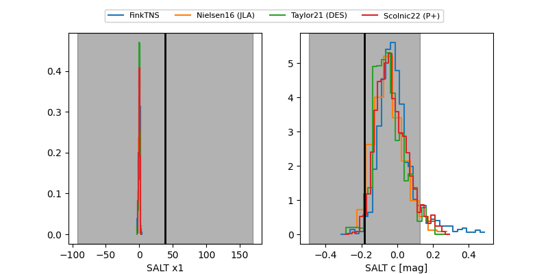

FINK: ZTF25abvvccq
Lasair: ZTF25abvvccq
ALeRCE: ZTF25abvvccq
TNS: 2025zps
YSE: 2025zps
ZTF25abvvccq (ztf,fink)
2025zps (tns,yse)
equatorial (ra, dec) = (335.5549,-18.16986)
galactic (l, b) = (39.5771,-54.56871)


last ztfg=18.28
2 ztfg detections